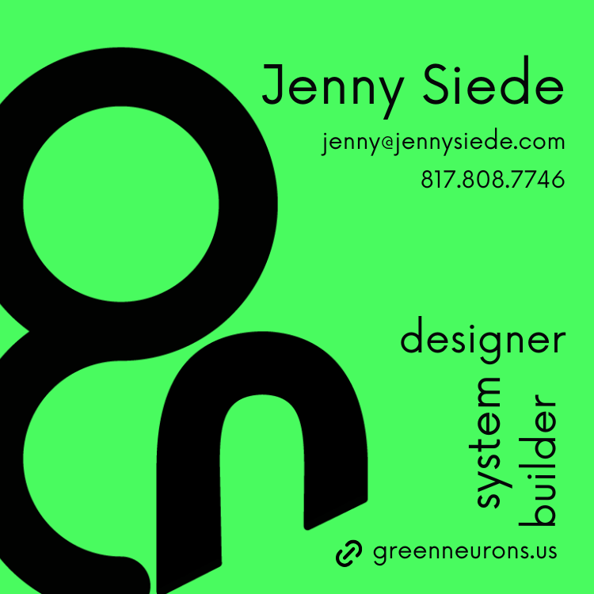
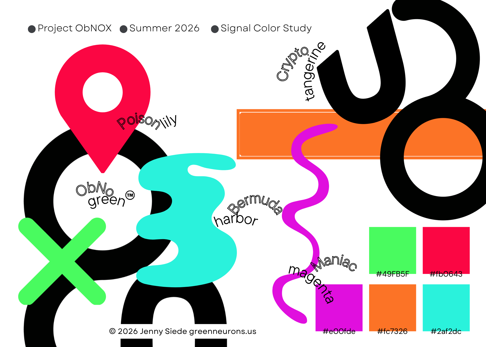

Project ObNOX™ · Artifacts
What got made
The first two ObNOX™ artifacts. Both started as a question about attention. Both answered it with color.
Artifact 01
Summer 2026 business card

Artifact 02
ObNOX™ Mocktails color study
